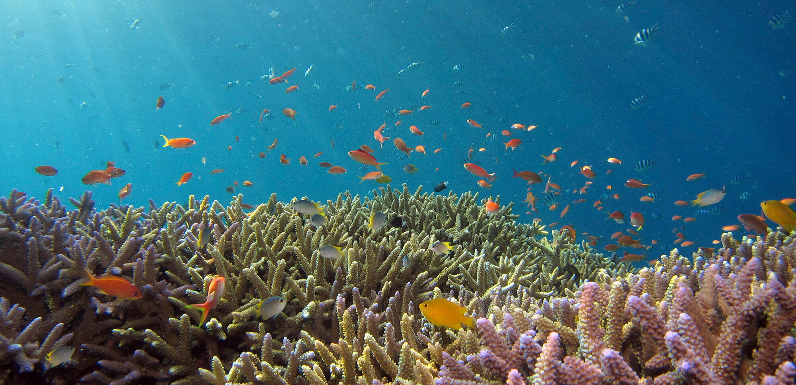
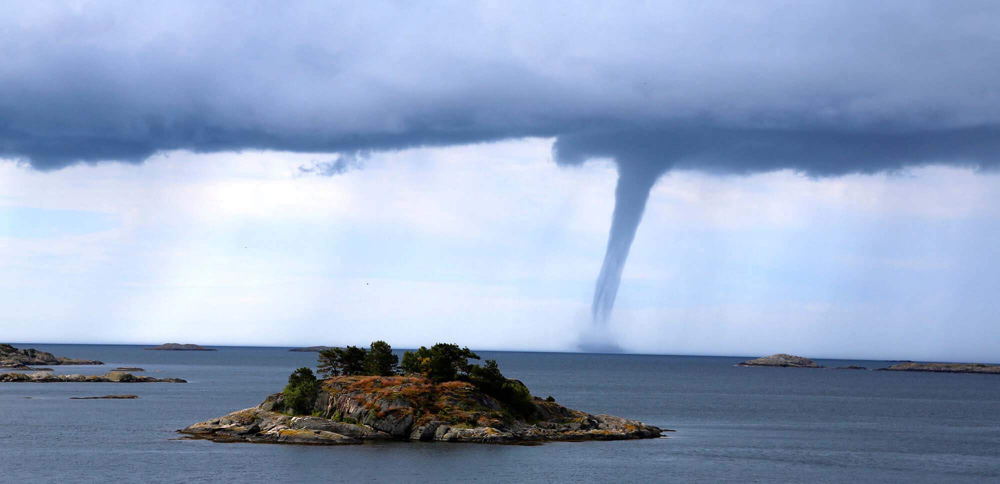

Cambio climático
Introducción
Existe un gran desconocimiento de lo que es el cambio climatico en realidad, lo que da origen a una serie de falsos mitos sobre el cambio climático. Aquí te mostraremos qué es el cambio climático, cuáles son sus causas, sus consecuencias y cómo se puede combatir. En definitiva, cómo nos afecta el cambio climático.
En qué consiste
En primer lugar es necesario aclarar dos conceptos que se toman de manera erronea como sinónimos: el cambio climático y el calentamiento global, realmente el calentamiento global es la causa del cambio climático que consiste en el aumento de la temperatura del planeta.
Causas
GASES DE EFECTO INVERNADERO
Dióxido de carbono (CO2), Metano (CH4), Compuestos halogenados, Ozono troposférico, Óxido de nitrógeno. Provocados principalmente por la quema de combustibles fósiles para la generación de electricidad, el transporte, la calefacción, la industria y la edificación. También provocados por la ganadería, la agricultura (principalmente el cultivo del arroz), el tratamiento de aguas residuales y los vertederos entre otros.
AUMENTO EXPONENCIAL DE LA POBLACIÓN
El número de habitantes crece exponencialmente por lo que cada vez necesitamos más recursos. Ésto acelera el aumento de la emisión de gases de efecto invernadero.
DESTRUCCIÓN DE ECOSISTEMAS TERRESTRES Y DEFORESTACIÓN
Los bosques y selvas tropicales desaparecen a velocidad vertiginosa. En los últimos 10 años, se han destruido nada menos que 13 millones de hectáreas. Los bosques son sumideros naturales de carbono que mediante la fotosíntesis absorben CO₂ y devuelven oxígeno a la atmósfera.

DESTRUCCIÓN DE ECOSISTEMAS MARINOS
Los océanos también son sumideros de carbono, absorbiendo hasta el 50 % del CO₂ generado. Además de su destrucción, el problema es que cuando alcanzan su límite, el océano se acidifica y se producen muertes y enfermedades de la flora y fauna marina.

Consecuencias
CAMBIOS EN LOS ECOSISTEMAS Y DESERTIFICACIÓN
La variación de las condiciones de vida en los entornos naturales provoca muertes, enfermedades y migraciones masivas de especies.

DERRETIMIENTO DE LOS POLOS Y SUBIDA DEL NIVEL DEL MAR
El calor provoca el derretimiento del hielo en los polos, lo que hace subir el nivel del mar y amenaza con sumergir bajo el agua litorales costeros y pequeños estados insulares.
ACIDIFICACIÓN DE LOS OCÉANOS
La absorción de demasiada cantidad de CO2 provoca la muerte y la enfermedad de peces, algas, corales y otros organismos submarinos.
FENÓMENOS METEOROLÓGICOS EXTREMOS
Huracanes, ciclones, tifones, sequías, inundaciones, lluvias o nevadas incrementan su grado de violencia a causa del calentamiento global, provocando más muertes y daños materiales.

EXTINCIÓN DE ESPECIES
El cambio en los ecosistemas y la desertificación provocan la muerte de entre 10.000 y 50.000 especies cada año.
MIGRACIONES MASIVAS
es estima pueda haber alcanzado los mil millones de personas en el año 2050.
En esta página se pueden encontar más causas y consecuencias.
Para obtener mas imagenes clica aquí.
Incidencia del hombre
Los expertos coinciden en señalar la Revolución Industrial como el punto de inflexión en el que las emisiones de gases de efecto invernadero arrojadas a la atmósfera empezaron a dispararse. Hay que recordar que la Revolución industrial nació de otras muchas pequeñas revoluciones: la agrícola, la tecnológica, la demográfica, de medios de transporte, finanzas… que dieron lugar a un nuevo modelo de producción y consumo.
Desde ese momento, el crecimiento de la población (en 1750 había menos de 800 millones de habitantes en la Tierra, hoy somos más de 7.500 millones), un consumo de recursos cada vez más desmedido, el aumento en la demanda y producción de energía obtenidas mayoritariamente a través de combustibles fósiles… han provocado que el planeta haya entrado en lo que parte de la comunidad científica ha denominado el Antropoceno: la nueva era geológica motivada por el impacto del ser humano en la Tierra.
El principal resultado ha sido el aumento de la temperatura global del planeta, que desde ese período ha aumentado, si bien se estima que al final del presente siglo el termómetro pueda aumentar todavía más aun cumpliéndose los compromisos de reducción de emisiones fijados por los países.
Ayuda
Para contactar con nosotros